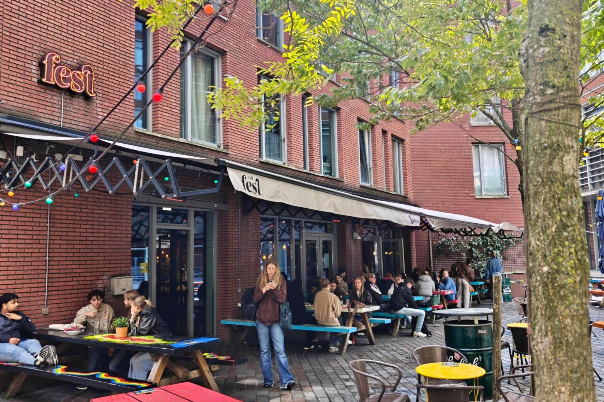

Café Fest
De informele huiskamer van de Amstelcampus met een groot terras. Je kunt er overdag prima studeren met een tosti, terwijl het aan het eind van de middag verandert in de vaste plek voor een vrijdagmiddagborrel.
Reviews
-
"Ze hebben hier tostis en hamburgers, wat wil je nog meer?"
David
-
"Gezellige sfeer, veel keuzes op het menu!"
Mika
-
"Gezellig café met een relaxte sfeer, perfect om na school nog even wat te drinken met
vrienden. En met Grolsch op de tap zit je helemaal goed."
Rosa